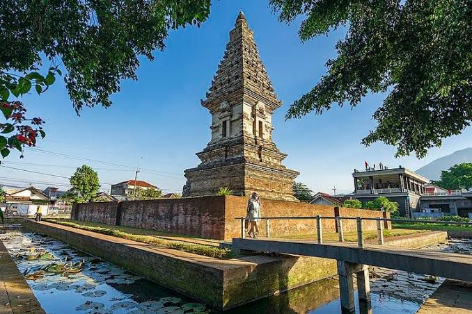

Kerajaan Singasari merupakan kerajaan Hindu-Buddha yang berkembang di Jawa Timur, Indonesia, pada abad ke-13 hingga awal abad ke-14. Singasari didirikan oleh Ken Arok pada sekitar tahun 1222 Masehi. Kerajaan ini menjadi penting dalam sejarah Jawa karena mengawali periode kemunculan kerajaan-kerajaan besar di pulau tersebut, seperti Majapahit yang menggantikannya. Singasari dikenal dengan keberhasilannya dalam memperluas wilayah kekuasaan, terutama di Jawa Timur, serta dalam pengembangan seni dan budaya
Masa Kejayaan

Kerajaan Singosari, yang berdiri di Jawa Timur pada abad ke-13, mencapai masa kejayaan di bawah pemerintahan Kertanegara. Pada masa ini (tahun 1268-1292 M), Singosari mengalami kemajuan ekonomi, politik, dan budaya. Kertanegara dikenal sebagai penguasa yang memperluas wilayah, mengembangkan sistem administrasi, serta mendukung seni dan keagamaan. Kesenian arca Singosari menampilkan kekayaan detail dan gaya unik, mencerminkan pencapaian tinggi dalam seni rupa. Namun, kejayaan ini juga diikuti oleh konflik dan perlawanan, terutama dari Mongol yang akhirnya menaklukkan Singosari pada tahun 1292.
Masa Kemunduran
Runtuhnya kerajaan singasari disebabkan oleh 2 hal, yaitu:
•Pemberontakan Jayakatwang
•Serangan dari Bangsa Mongol
Pemberontakan Jayakatwang
Di bawah kepemimpinan Raja Kertanegara, Jayakatwang memimpin sebagai adipati di Gelang-gelang. Awalnya Raja Kertanegara dengan Jayakatwang berkerabat dan juga mempunyai hubungan yang baik. Namun, karena dihasut oleh patihnya, Jayakatwang ingin membalas kematian leluhurnya yang tewas di tangan pendiri Singasari.
Hal inilah yang menjadi penyebab pemberontakan yang dilakukan Jayakatwang, dibantu oleh Arya Wiraraja (1292).
Jayakatwang menyerang dari 2 arah, selatan dan utara. Untuk menahan serangan Jayakatwang, Raja Kertanegara memerintahkan Raden Wijaya pendiri kerajaan Majapahit. Namun, ketika Raden Wijaya mengejar pasukan kediri, Jayakatwang menyerang keraton dari arah selatan. Raja Kertanegara pun tewas, sedangkan Raden Wijaya berhasil melarikan diri. Tewasnya Raja Kertanegara menandai runtuhnya kerajaan Singasari.
Serangan dari bangsa Mongol
Faktor eksternal runtuhnya kerajaan Singasari adalah serangan dari bangsa mongol pada 1280 dan 1281 di bawah Kubilai khan. Lewat utusannya, Kubilai khan meminta Singasari mengirim pangeran ke China untuk bukti tunduknya Singasari pada Kerajaan Mongol. Sayangnya, Raja Kertanegara menanggapi tuntutan tsb dengan cara provokatif. Ia melukai wajah utusan kerajaan Mongol dan menolak tunduk pada bangsa Mongol.
Kubilai Khan pun tersinggung dan mengirimkan armada perang untuk menyerang kerajaan Singasari pada 1291. Akan tetapi, selagi Kertanegara mempersiapkan diri untuk menghadapi serangan pasukan Mongol, tiba-tiba Jayakatwang melakukan pemberontakan.
Sisa peninggalan
Sisa-sisa Peninggalan Kerajaan Singasari
Meski Kerajaan Singasari telah runtuh sejak ribuan tahun lalu, namun sisa-sisa peninggalannya masih dapat kamu lihat hingga sekarang. Berikut sejumlah peninggalan Kerajaan Singasari di Indonesia.
1. Candi Singasari
Candi Singasari ditemukan oleh Nicolaus Engelhard pada tahun 1803. Candi berbentuk bujur sangkar ini diketahui menyimpan sebagian abu Kertanegara.
Selain itu, di Candi Singasari juga ditemukan arca Prajnaparamita. Penduduk lokal sering menyebutnya sebagai patung Ken Dedes.
2. Candi Jawi
Candi Jawi yang punya nama asli Jajawa diprediksi dibangun sekitar abad ke-13. Candi ini terletak di kaki Gunung Welirang, Desa Candi Wates, Kecamatan Prigen, Pasuruan, Jawa Timur.
Dalam Kitab Negarakertagama, disebutkan bahwa Candi Jawi didirikan atas perintah Kertanegara sebagai tempat ibadah bagi umat Siwa-Budha. Candi ini juga dijadikan sebagai tempat penyimpanan abu Kertanegara.
3. Candi Kidal
Dalam buku Candi Indonesia: Seri Jawa oleh Edi Sedyawati, Candi Kidal terletak di lembah Gunung Bromo. Di dalam candi terdapat sebuah ruangan yang dahulu ditemukan arca Siwa Mahadewa.
4. Candi Jago
Candi Jago terletak di Dusun Jago, Desa Tumpang, Kecamatan Tumpang, Kabupaten Malang, Jawa Timur. Menurut kitab Negarakertagama dan Pararaton, nama Candi Jago sebenarnya berasal dari kata 'Jajaghu'.
Candi ini didirikan pada abad ke-13 oleh Kertanegara. tujuan dibangunnya Candi Jago adalah sebagai bentuk penghormatan kepada ayahnya, Sri Jaya Wisnuwardhana alias Ranggawuni.
5. Prasasti Gondang
Prasasti Gondang ditemukan di sebuah sawah di Dusun Rejoso, Desa/Kecamatan Gondang, Kabupaten Mojokerto, Jawa Timur pada tahun 2020 lalu.
Mengutip detikNews, pada prasasti tersebut bertuliskan angka tahun 1197 saka atau 1275 Masehi. Berdasarkan angka tahunnya, prasasti ini dibuat pada masa kekuasaan Raja Kertanegara dari Kerajaan Singasari.
6. Prasasti Singasari
Prasasti Singasari ditemukan di sebelah utara Candi Singasari pada tahun 1904. Prasasti ini diukir di batu dengan tulisan aksara Jawa Kuno.
Prasasti ini ditulis untuk mengenang pembangunan candi pemakaman yang dipimpin oleh Gajah Mada. Maka dari itu, Prasasti ini juga sering disebut Prasasti Gajah Mada.
7. Arca Amoghapasa
Dalam buku Selintas Prasasti dari Melayu Kuno oleh Budi Setiawan, arca Amoghapasa yang sekaligus merupakan prasasti ini ditulis dengan huruf Jawa Kuno dan bahasa campuran antara Sansekerta dan Melayu Kuno.
Lastest Blog
raja pertama kerajaan singasari dan raja kedua kerajaan singasari
Anusapati atau disebut Panji Anusapati adalah raja kedua dari Kerajaan Tumapel (atau yang kemudian terkenal dengan nama Singhasari) dengan bergelar nama Sri Bathara Anusapati yang memerintah pada tahun 1227-1248
Raden Wijaya or Raden Vijaya (also known as Nararya Sangramawijaya, regnal name Kertarajasa Jayawardhana) (reigned 1293–1309) was a Javanese emperor, and the founder and first monarch of the Majapahit Empire.


.jpeg)

.jpeg)